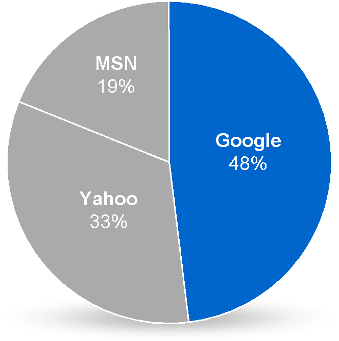

Java Native Interface
in android
Sim Sun
Aug 17, 2012
Sim Sun
Aug 17, 2012
jstring
Java_com_example_hellojni_HelloJni_stringFromJNI(
JNIEnv* env,jobject thiz ){
return (*env)->NewStringUTF(env, "Hello from JNI !");
}
package com.example.hellojni;
public native String stringFromJNI();
| Name | Occupation |
|---|---|
| Luke Mahé | V.P. of Keepin’ It Real |
| Marcin Wichary | The Michael Bay of Doodles |
| Name | Occupation |
|---|---|
| Luke Mahé | V.P. of Keepin’ It Real |
| Marcin Wichary | The Michael Bay of Doodles |


<script type='text/javascript'>
// Say hello world until the user starts questioning
// the meaningfulness of their existence.
function helloWorld(world) {
for (var i = 42; --i >= 0;) {
alert('Hello ' + String(world));
}
}
</script>
<style>
p { color: pink }
b { color: blue }
u { color: 'umber' }
</style>
<script type='text/javascript'>
// Say hello world until the user starts questioning
// the meaningfulness of their existence.
function helloWorld(world) {
for (var i = 42; --i >= 0;) {
alert('Hello ' + String(world));
}
}
</script>
<style>
p { color: pink }
b { color: blue }
u { color: 'umber' }
</style>
The best way to predict the future is to invent it.
A distributed system is one in which the failure of a computer you didn’t even know existed can render your own computer unusable.